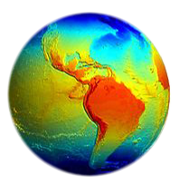
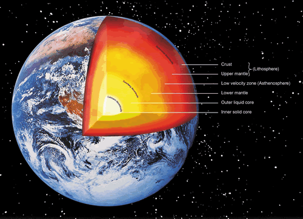

The Earth (otherwise known as the world, in Greek: Γαῖα Gaia, or in Latin: Terra ) is the third planet from the Sun, the densest planet in the Solar System, the largest of the Solar System's four terrestrial planets, and the only astronomical object known to harbor life.
Earth's lithosphere is divided into several rigid tectonic plates that migrate across the surface over periods of many millions of years. 71% of Earth's surface is covered with water. The remaining 29% is land mass consisting of continents and islands that together has many lakes, rivers, and other sources of water that contribute to the hydrosphere. The majority of Earth's polar regions are covered in ice, including the Antarctic ice sheet and the sea ice of the Arctic ice pack. Earth's interior remains active with a solid iron inner core, a liquid outer core that generates the Earth's magnetic field, and a convecting mantle that drives plate tectonics.
Physical Characteristics

The shape of Earth approximates an oblate spheroid, a sphere flattened along the axis from pole to pole such that there is a bulge around the equator. This bulge results from the rotation of Earth, and causes the diameter at the equator to be 43 kilometres (27 mi) larger than the pole-to-pole diameter. Thus the point on the surface farthest from Earth's center of mass is the summit of the equatorial Chimborazo volcano in Ecuador. The average diameter of the reference spheroid is about 12,742 kilometres (7,918 mi), which is approximately (40,000 km)/π, because the meter was originally defined as 1/10,000,000 of the distance from the equator to the North Pole through Paris, France.
Local topography deviates from this idealized spheroid, although on a global scale these deviations are small compared to Earth's radius: The maximum deviation of only 0.17% is at the Mariana Trench (10,911 metres (35,797 ft) below local sea level), whereas Mount Everest (8,848 metres (29,029 ft) above local sea level) represents a deviation of 0.14%. If Earth were shrunk to the size of a billiard ball, some areas of Earth such as large mountain ranges and oceanic trenches would feel like tiny imperfections, whereas much of the planet, including the Great Plains and the abyssal plains, would feel smoother.
Earth's mass is approximately 5.97×1024 kg (5,970 Yg). It is composed mostly of iron (32.1%), oxygen (30.1%), silicon (15.1%), magnesium (13.9%), sulfur (2.9%), nickel (1.8%), calcium (1.5%), and aluminium (1.4%), with the remaining 1.2% consisting of trace amounts of other elements. Due to mass segregation, the core region is estimated to be primarily composed of iron (88.8%), with smaller amounts of nickel (5.8%), sulfur (4.5%), and less than 1% trace elements.
The geochemist F. W. Clarke calculated that a little more than 47% of Earth's crust consists of oxygen. The more common rock constituents of the crust are nearly all oxides: chlorine, sulfur and fluorine are the important exceptions to this and their total amount in any rock is usually much less than 1%. The principal oxides are silica, alumina, iron oxides, lime, magnesia, potash and soda. The silica functions principally as an acid, forming silicates, and all the most common minerals of igneous rocks are of this nature. From a computation based on 1,672 analyses of all kinds of rocks, Clarke deduced that 99.22% was composed of 11 oxides with the other constituents occurring in minute quantities
Internal Structure
Earth's interior, like that of the other terrestrial planets, is divided into layers by their chemical or physical (rheological) properties, but unlike the other terrestrial planets, it has a distinct outer and inner core. The outer layer is a chemically distinct silicate solid crust, which is underlain by a highly viscous solid mantle. The crust is separated from the mantle by the Mohorovicic discontinuity, and the thickness of the crust varies: averaging 6 km (kilometers) under the oceans and 30-50 km on the continents. The crust and the cold, rigid, top of the upper mantle are collectively known as the lithosphere, and it is of the lithosphere that the tectonic plates are composed. Beneath the lithosphere is the asthenosphere, a relatively low-viscosity layer on which the lithosphere rides. Important changes in crystal structure within the mantle occur at 410 and 660 km below the surface, spanning a transition zone that separates the upper and lower mantle. Beneath the mantle, an extremely low viscosity liquid outer core lies above a solid inner core. The inner core may rotate at a slightly higher angular velocity than the remainder of the planet, advancing by 0.1-0.5° per year. The radius of the inner core is about one fifth of that of Earth.
Geographic Layers of Earth
| Depthkm | Component Layer | Density g/cm3 |
| 0-60 | Lithosphere | ---- |
| 0-35 | Crust | 2.2-2.9 |
| 35-60 | Upper Mantle | 3.4-4.4 |
| 35-2890 | Mantle | 3.4-5.6 |
| 100-700 | Asthenosphere | ---- |
| 2890-5100 | Outer core | 9.9-12.2 |
| 5100-6378 | Inner Core | 12.8-13.1 |